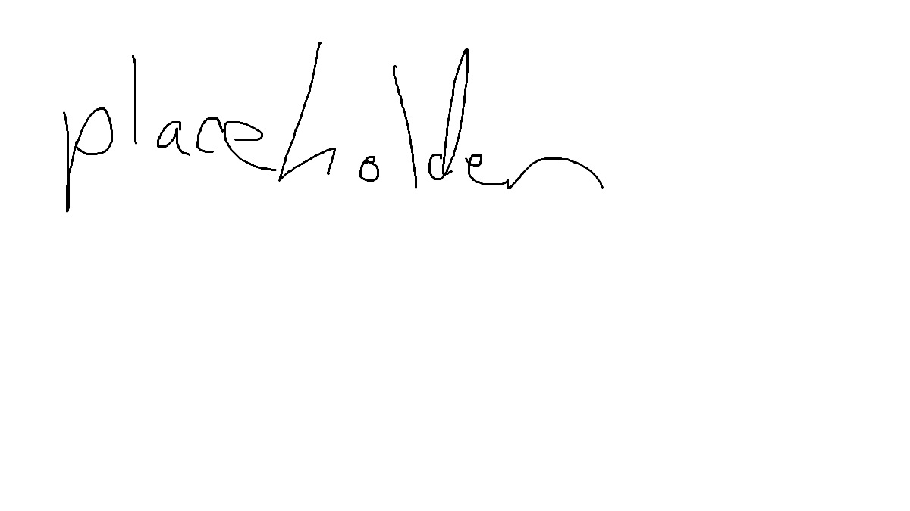

Getting Started
A simple introduction to installing and opening RiftWii.
- A Wii, Wii U or Wii Mini with
the Homebrew Channel
- An SD Card that is formatted
to FAT32
- A USB Drive that is formatted
to FAT32 or WBFS (Optional)
- A computer or device to
download RiftWii
Download the zip from the Github
Copy the contents of the
sd-card
folder onto the root of your
SD Card.

If you have a USB Drive, also copy
the contents of
usb-drives
onto your USB Drive.
Copy your mod packs to
sd:/riivolution
or
usb:/riivolution
and games to the
wbfs
or
games
in your games folder.
Start RiftWii from the Homebrew Channel.